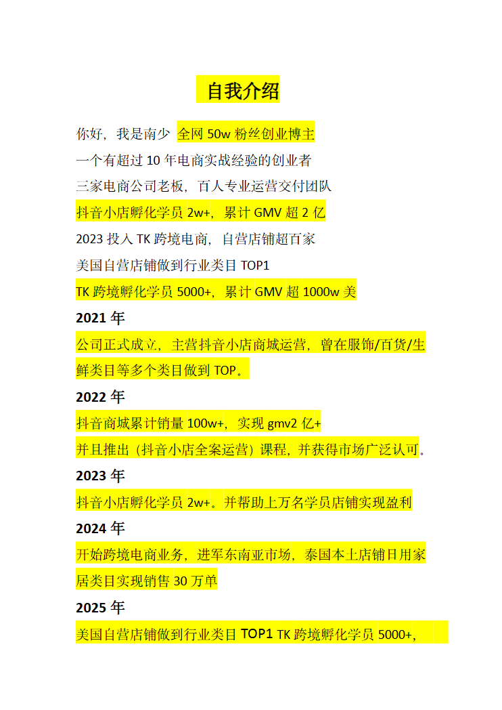

第 1 页

查看文字
自我介绍
你好，我是南少全网50w粉丝创业博主
一个有超过10年电商实战经验的创业者
三家电商公司老板，百人专业运营交付团队
抖音小店孵化学员2w+，累计GMV超2亿
2023投入TK跨境电商，自营店铺超百家
美国自营店铺做到行业类目TOP1
TK跨境孵化学员5000+，累计GMV超1000w美
2021年
公司正式成立，主营抖音小店商城运营，曾在服饰/百货/生
鲜类目等多个类目做到TOP。
2022年
抖音商城累计销量100w+，实现gmv2亿+
并且推出（抖音小店全案运营）课程，并获得市场广泛认可。
2023年
抖音小店孵化学员2w+。并帮助上万名学员店铺实现盈利
2024年
开始跨境电商业务，进军东南亚市场，泰国本土店铺日用家
居类目实现销售30万单
2025年
美国自营店铺做到行业类目TOP1TK跨境孵化学员5000+，